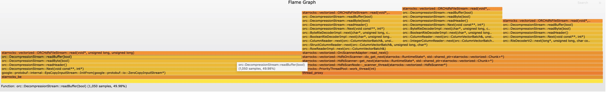
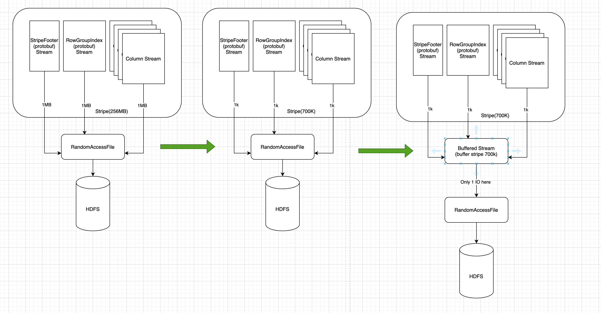

优化读取小Stripe的ORC文件
Optimize small read on ORC(small row group index/stripe/file) by dirtysalt · Pull Request #3962 · StarRocks/starrocks https://github.com/StarRocks/starrocks/pull/3962
因为某些原因导致stripe非常小，但是stripe初始化会有至少6次读取，所以如果stripe很多的话，那么IO次数会非常多
- https://community.cloudera.com/t5/Support-Questions/Spark-ORC-Stripe-Size/td-p/189844
- https://issues.apache.org/jira/browse/HIVE-13232
假设我们读取struct<c0:int> 字段，每次读取一个stripe大约会有这么几次IO：(https://orc.apache.org/specification/ORCv1/)
- protobuf: stripe footer
- protobuf: struct<c0:int> 这个类型的row group index.
- protobuf: c0:int 这个类型的row group index
- struct<c0:int> present stream
- c0:int present stream
- c0:int data stream
这个我在本地使用自己创建的小文件进行了验证，这个小文件350个stripes，一个stripe大约700K. 代码如下
with pyorc.Writer(fh, typedef, compression=pyorc.CompressionKind.ZLIB,
stripe_size=128, batch_size=1) as writer:
for idx in range(1000 * 1000):
row = gen_row(idx)
writer.write(tuple(row))
使用下面任何一个命令，都可以看到stripe情况：
- java -jar ~/installed/orc-tools-1.7.0-SNAPSHOT-uber.jar meta test_many_columns.orc | grep -P "Stripe"
- hive –orcfiledump test_many_columns.orc | grep -P "Stripe"
Stripe 350: Stripes: Stripe: offset: 3 data: 722325 rows: 2864 tail: 1861 index: 9095 Stripe: offset: 733284 data: 763098 rows: 2864 tail: 1907 index: 9096 Stripe: offset: 1507385 data: 776631 rows: 2864 tail: 1880 index: 9097
读取一次产生的火焰图如下：
- protobuf相关有1050次
- stream相关有1050次
- 额外一次是ORC的postscript和file footer
- 累加起来是2101次，和profile数字完全一致。

优化思路如下：
- 在orc代码中某些将要读取文件代码的地方，加入 `prepareCache`
- 其中 `prepareCache` 里面判断是否可以将接下来要读取的地方完全缓存
- 可以缓存的东西包括：整个文件（如果文件很小），整个Stripe（如果Stripe很小），或者是整个Row Group Index.
最开始读取方式如最左边。不过当如果stripe很小的时候，那么每个stream对应的读取也都是很小，所以观察到的都是小量读取，average read size per IO会很低。
最右边是改进之后的情况：如果在某些地方增加缓存的话，那么上面情况就会有很大改观，代价是：读取量更大，并且多了一次memcpy
